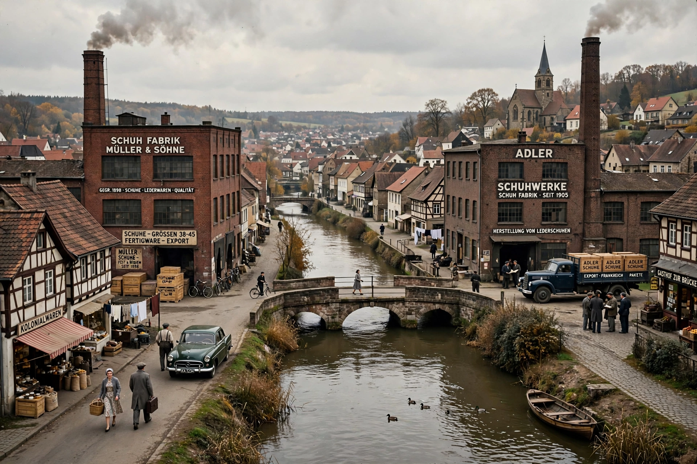

Dassler brothers feud
From Wikipedia, the free encyclopedia
| Dassler brothers feud | |
 | |
| Participants | Adolf "Adi" Dassler and Rudolf Dassler |
|---|---|
| Period | c. 1940s – 2009 (formal peace) |
| Location | Herzogenaurach, Germany |
| Result | Split of the family firm into Adidas and Puma |
The Dassler brothers feud was the decades-long rivalry between German brothers Adolf ("Adi") Dassler, founder of Adidas, and Rudolf Dassler, founder of Puma. The two had run the successful Dassler Brothers Shoe Factory together from 1924, supplying spikes to Olympic champions including Jesse Owens, before personal, wartime and business grievances tore the partnership apart.
Origins
Adi was the craftsman, designing shoes; Rudolf the salesman. Tensions grew during the Second World War — over the factory's conversion to armaments work, Rudolf's conscription, and mutual suspicions the brothers' wives deepened. A frequently retold story has Rudolf, sheltering from an Allied bombing raid in 1943, blaming Adi for his predicament; Rudolf later claimed he had been denounced to the authorities. After the war Rudolf was briefly detained by the Americans, convinced his brother had informed on him.
The split
In 1948 the brothers divided the business and its staff and never spoke again. Rudolf founded Puma on one side of the river Aurach; Adi founded Adidas on the other. Herzogenaurach became the "town of bent necks," where residents checked which brand a person wore before speaking to them. Families, sports clubs, and even the town's two football teams were divided by allegiance. The rivalry drove innovations from both firms but also underhand tactics in competing for athlete endorsements.
Aftermath
Rudolf died in 1974 and Adi in 1978; they are buried at opposite ends of the same cemetery. In September 2009 the two companies symbolically ended the feud with a friendly football match between mixed Adidas–Puma employee teams, coinciding with International Peace Day.
See also: Adolf Dassler, Puma